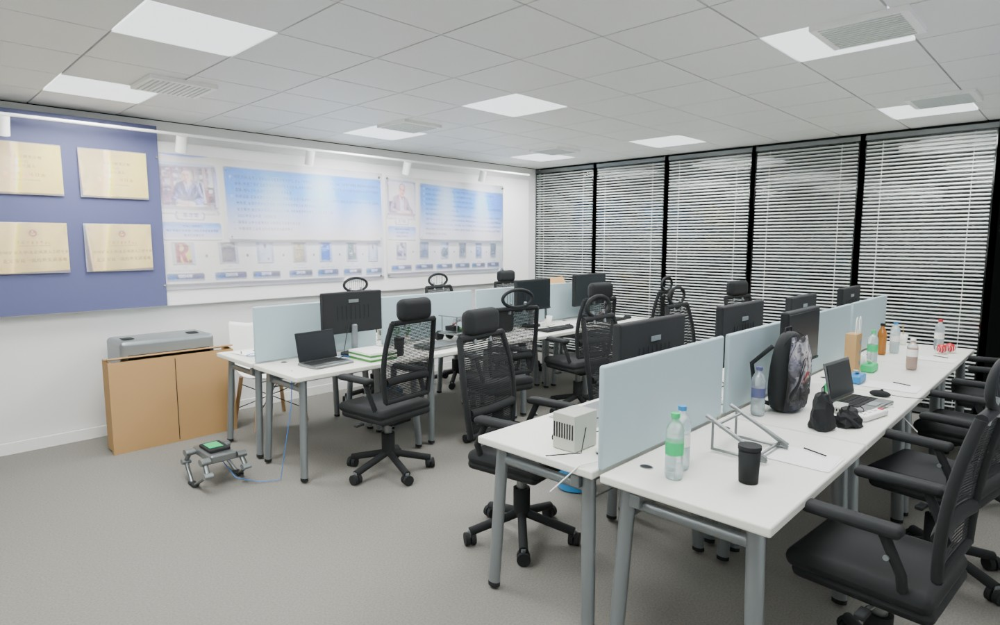

◈
STUDIO
/ TWIN
工作室数字孪生
照片 / 视频
→
逐物建模
→
交互场景
SCENE 01
·
2026.11
◈ 全景
↗ 室内
⊞ 俯视
↺
⤢

正在打开工作室
加载三维模型 · 约 14 MB
RECONSTRUCTED SPACE
走进你的工作室。
从房间布局，到桌上的每一处细节。
Z
↑
＋
VIEWS
预设视角
01
入口全貌
02
仪器桌面
03
纸箱一侧
04
玻璃隔断